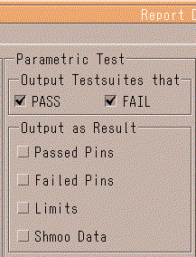

Parametric test settings
The settings you can make for a parametric test are divided into two groups:
- Output Testsuites that
- Output as Result

Setting in the "Output Testsuites that" group
The checkboxes of this group let you specify for what kinds of parametric tests you want test suite data: passed, failed, both, or neither.
The example below shows the typical output for a test suite that performs a parametric test (global search). Result data is not included.
========== Started Testsuite search_FXDL ======================= Executed Testmethod global_search on Site 1: FAILED Waveform Set 1; Timing Set 1; DPS Set 1; Level Set 1; Startlabel: alternating ========== Ended Testsuite search_FXDL =========================
Setting in the "Output as Result" group
The first two checkboxes of this group let you specify for which pins (passed and/or failed pins) you want result data to be included in the report.
This data appears in the Pin Results section in the generated report.
The Limits checkbox includes the defined and measured limits for a test, and additional data for some test type(for example, for production iddq, global search, and leakage).
The Shmoo checkbox enables the graphical presentation of shmoo test function result data in the output of the Event Formatter. (Appendix C: Event Formatter Output Examples shows how shmoo results are presented in the output.)
The following example shows the output of the Event Formatter for a test suite performing a leakage test, with the first three checkboxes in the Output as Result group being on
If the Limits checkbox is off, the output between the Low/High Level Measurement and Pin Results section headers and the information on the used pins, the test mode and the functional pre-test, are not included in the report.
If no output for passed or failed pins is activated (first two checkboxes are off), the Measured Range is not included in the output.
========== Started Testsuite leak_004 ============================
Executed Testmethod leakage on Site 1: FAILED
Equation Set 1; Spec Set 4; Timing Set 1
Equation Set 1; Spec Set 1; Levels Set 1
Startlabel: alternating
Pins used: dbus
Testmode: Serial measurement
Functional pre-test executed
---------- Low Level Measurement: --------------------------------
Force Voltage: 0.400 V
|Max Current|: 50.000 uA
Settling Time: 5.000 ms
Functional pre-test stopped at Vector 3
Pass/Fail Limits: [ 0.005 uA , 1.000 uA]
Measured Range: [ -0.006 uA .. 0.011 uA]
---------- Pin Results: ------------------------------------------
dbus5 FAIL 0.003
dbus4 PASS 0.011
dbus3 PASS 0.009
dbus2 FAIL -0.006
dbus1 PASS 0.008
dbus0 PASS 0.005
---------- High Level Measurement: -------------------------------
Force Voltage: 3.800 V
|Max Current|: 60.000 uA
Pre-charge Volt.: 4.000 V
Settling Time: 3.500 ms
Functional pre-test stopped at Vector 7
Pass/Fail Limits: [ -0.007 uA , 2.000 uA]
Measured Range: [ 0.002 uA .. 0.009 uA]
---------- Pin Results: ------------------------------------------
dbus5 PASS 0.003
dbus4 PASS 0.005
dbus3 PASS 0.002
dbus2 PASS 0.002
dbus1 PASS 0.004
dbus0 PASS 0.009
========== Ended Testsuite leak_004 ==============================Functional changes
- Introduced before SmarTest 6.3.2